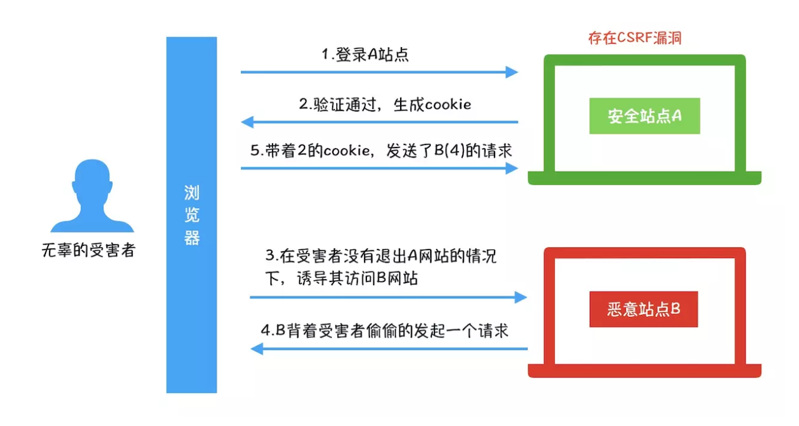

说明
随着前端应用的复杂度越来越高，前端安全问题也就越来越受到重视，常见的Web安全问题包含哪些呢？
Web安全的种类
XSS攻击
XSS（Cross-site Scripting，跨站脚本攻击）是一种代码注入式的攻击方式。攻击者在目标网站上注入恶意代码，当用户登录网站时就会被执行这些代码，这些恶意的脚本可以获取到用户的cookie，session，token等，攻击者就可以假扮用户进行非法操作。
XSS分类
反射型
反射型是指恶意的代码是来自用户的请求。当用户点击一个恶意链接，或者是提交了一个表单，服务器响应了用户请求，并在浏览器端执行了恶意代码。
反射型XSS的攻击步骤：
攻击者构造包含恶意代码的URL
用户打开这个URL，服务器提取出恶意代码，并将这段代码返回给浏览器
浏览器接收到服务器的响应后解析HTML，也执行了恶意代码
恶意代码窃取用户数据并发送给攻击者，或者直接冒充用户进行一些敏感操作
DOM型
DOM型XSS攻击，实质上就是前端的JS代码不够严谨，把一些不可信任的内容插入到了页面。比如使用 .innerHTML、.outerHTML、.appendChild、document.write() 的时候先把内容做编码过滤。
存储型
存储型是指恶意代码来自网站的数据库。攻击者先根据网站的输入途径（比如评论）将恶意代码存入数据库，当浏览器访问到这段数据的时候就会执行这段代码从而受到攻击。
XSS防御
基本思路：
- 输入输出进行转译编码过滤
- 白名单
具体方案：
CSP
CSP用来限制浏览器只能使用从可信任的域下载的资源。在服务端使用HTTP的Content Security Policy头部来指定策略，或者在前端设置meta标签。
例如配置只允许加载同域资源：
1
Content-Security-Policy: default-src 'self'
1 | <meta http-equiv="Content-Security-Policy" content="form-action 'self';"> |
CSP在XSS防御中的作用：
- 禁止加载外域代码，防止复杂的攻击逻辑
- 禁止外域提交，被攻击后数据不会外泄
- 禁止执行内联脚本
- 禁止执行未授权的脚本
- 合理使用上报可以及时发现XSS，利于尽快修复
实体转译和反转译
1 | function htmlEncode(html) { |
控制输入内容，对输入校验过滤
限制输入数据的字符类型、字符长度，在存入数据库之前进行类型转换、过滤等。
CSRF
CSRF（Cross-site request forgery） 跨站请求伪造，是一种依赖web浏览器的、被混淆过的代理人攻击，通过伪装来自受信任用户的请求来利用受信任的网站，造成个人隐私泄露及财产安全。

CSRF防御
添加验证码
体验太差
referer
通过请求头中的referer字段判断请求的来源，但是referer可以被伪造，所以也不保险。
token
CSRF攻击之所以能够成功，是因为服务器误把攻击者发送的请求当成了用户自己的请求。那么我们可以要求所有的用户请求都携带一个CSRF攻击者无法获取到的Token。服务器通过校验请求是否携带正确的Token，来把正常的请求和攻击的请求区分开。跟验证码类似，只是用户无感知。
- 服务端给用户生成一个token，加密后传递给用户
- 用户在提交请求时，需要携带这个token
- 服务端验证token是否正确
Samesite Cookie属性
为了从源头上解决这个问题，Google起草了一份草案来改进HTTP协议，为Set-Cookie响应头新增Samesite属性，它用来标明这个 Cookie是个“同站 Cookie”，同站Cookie只能作为第一方Cookie，不能作为第三方Cookie，Samesite 有两个属性值，分别是 Strict 和 Lax。
部署简单，并能有效防御CSRF攻击，但是存在兼容性问题。
Samesite=Strict
Samesite=Strict 被称为是严格模式,表明这个 Cookie 在任何情况都不可能作为第三方的 Cookie，有能力阻止所有CSRF攻击。此时，我们在B站点下发起对A站点的任何请求，A站点的 Cookie 都不会包含在cookie请求头中。
点击劫持
点击劫持一般是指在页面中写一个透明的 iframe，然后诱导用户点击，实际上是隐藏的 iframe触发了点击事件进行了一些用户不知道的操作。
其它一些
DDOS
DDOS（分布式拒绝服务）是以通过某种手段，致使网站的某个环节瘫痪，从而使得整个网站无法正常运行。比较常见的就是通过一些“肉鸡”无间断的大量发送请求，使目标服务器超出负荷，从而崩溃瘫痪。
防御：
- 拦截恶意请求
- 带宽扩容
- 使用CDN
- 网站备份
SQL注入
Sql 注入攻击是通过将恶意的 Sql 查询或添加语句插入到应用的输入参数中，再在后台 Sql 服务器上解析执行进行的攻击。
存在的危害：
- 猜解后台数据库，盗取网站的敏感信息。
- 绕过认证，列如绕过验证登录网站后台。
- 注入可以借助数据库的存储过程进行提权等操作
如何防御：
- 对输入的数据做校验，过滤，转义。
- 避免动态拼接sql语句。
- 不要把机密信息直接存放，加密或者hash掉密码和敏感的信息
- 应用的异常信息应该给出尽可能少的提示，最好使用自定义的错误信息对原始错误信息进行包装
- 采取辅助软件或网站平台来检测SQL，如：jsky，MDCSOFT SCAN等